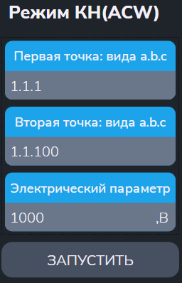

Утилита "Режим КН"
Утилита измеряет напряжение на указанных входах АСК и определяет погрешность измерения.
- "Начальная точка a.b.c" и "Конечная точка a.b.c" - входы АСК для подключения выводов источника напряжения и эталонного мультиметра;
- "Электрический параметр" - задание эталонного напряжения (в В);

После ввода параметров меню автоматически выполняются следующие действия:
- Начальная заданная точка подключается к шине A1;
- Конечная заданная точка подключается к шине B1;
- Вольтметр: устанавливается режим измерения и подключение к шинам A1,B1;
- Производится измерение;
-
В протокол выводится сообщения вида:
$TST1 Rд.б=100МОм+-10.00% Rизм=99.95МОм Погр=-0.05%
$TST1 Измерений:1 Все норма ПОГРmin=-0.05% ПОГРmax=0